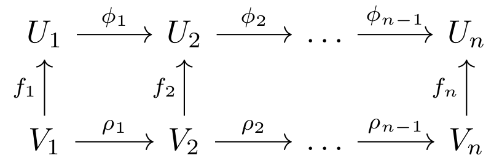

Induced matching
Can information contained in a function of persistence modules be summarized in a matching?
Persistence morphisms arises naturally when working with persistent homology. For example, consider two finite point clouds \(X, Y\) and their respective Vietoris-Rips filtrations \(\left\{ K_i \right\}_i, \left\{ L_i \right\}_i\). Then, if \(Y \subset X\), we have that \(L_i \subset K_i\).
Denote as \(U = (\{U_i\}, \{\phi_i\})\) and \(V=(\{V_i\}, \{\rho_i\})\) the persistence modules obtained evaluating homology in \(\left\{ K_i \right\}_i\) and \(\left\{ L_i \right\}_i\) respectively. Then, for each inclusion \(L_i \subset K_i\) we obtain a linear map \(f_i : V_i \rightarrow U_i\), making the following diagram commute,

We denote \(f = \{f_i\}\) a persistence morphism. However, as we will see, describing persistence morphisms is not an easy task in practice.
Persistence morphisms as modules
Persistence morphisms can be seen as a concrete case of ladder modules. It is known that ladder modules can be decomposed as a direct sum of indecomposable modules [EH-2011], in an analogous way to how 1D persistence modules can be described using interval modules.
For example, the following persistence morphism
can be decomposed as
This decomposition determines unambigously the persistence morphism, i.e. determines its isomorphic type. However, the set of possible indecomposables turn out to be a wild set when n > 5 [EH-2011]. In practice, this means that we cannot compute the decomposition algorithmically in the general case, and then its application to TDA is limited to concrete cases.
The image module of persistence morphisms
Given a persistence morphism \(f : V \rightarrow U\), the following vector spaces \begin{equation}\tag{} f(V_1) \rightarrow f(V_2) \rightarrow \ldots \rightarrow f(V_n) \end{equation} form a persistence module with linear maps induced by \(U\). We will denote it the image module of \(f\).
Unlike the decomposition of persistence morphisms, their image module can be calculated with cubical complexity [CEHM-2009]. In addition, it is known to be stable with respect to the interleaving distance [CEHM-2009]. However, its discrimination power is limited, since many non-isomorphic persistence morphisms share the same image module.
The \(Im\) and \(Ker\) operators
Our aim is to find an invariant of persistence morphisms, compatible with their decomposition, and with a greater discriminative power than the image module. If we want it to be useful for TDA, it should be also computable in polynomial time, and have a clear intuitive interpretation.
We were inspired by the proof of the decomposition theorem appearing in [C-2015] to use the following operators,
\begin{equation}\tag{} Im_{at}(V) := \rho_{a,t}(V_a)\,, \quad Ker_{bt}(V) := \ker \rho_{t,b+1}\, . \end{equation}
These operators can be used to calculate the multiplicity of an interval module \([a,b]\) in \(V\). If \(t \in [a,b]\), the multiplicity is given by \begin{equation}\tag{} \dim \dfrac{Im_{at}(V) \cap Ker_{bt}(V)}{Im_{a-1 \, t}(V) \cap Ker_{bt}(V) + Im_{at}(V) \cap Ker_{b-1 \, t}(V)} \end{equation} We denote the numerator and denominator of the quotient as \(V_{It}^+\) and \(V_{It}^-\) respectively. Note that the direct sum commutes with finite intersections, sums and quotient of vector spaces, Then, our idea is use this operations to create invariant vector spaces that relate \(V\) and \(U\) via \(f\) in such a way that is additive with respect to the direct sum of persistence morphisms (and hence sensitive to the decomposition of \(f\)).
The induced block function
Different ways of combining the image and kernel operators produces different invariants. In [GST-2023-1], we introduced the “induced block function”. Consider the persistence morphisms \(f : V \rightarrow U\) and two intervals, \(I\) and \(J\), with \(t\) the endpoint of \(I \cap J\). Then, the “induced block function” is defined as \begin{equation}\tag{} \small M_f(I,J) = \dim \dfrac{f (V_{It}^+) \cap U_{Jt}^+}{f (V_{It}^-)\cap U_{Jt}^+ + f (V_{It}^+ ) \cap U_{Jt}^-}. \end{equation} It is additive with respect to direct sums of persistence morphisms, i.e. \(M_{f \oplus g} (I,J) = M_f(I,J) + M_g(I,J)\). It can be also obtained with a simple calculation, reducing a matrix associated to the persistence morphism.
In particular, \(M_f(I,J)\) can be interpreted as a function between barcodes in the following sense: \(M_f(I,J)\) is the ammount of bars with size \(I\) in the barcode of \(V\) that are assigned to bars with size \(J\) in the barcode of \(U\) via \(f\). This interpretation make sense, since we prove in [GST-2023-1] that the number of bars \(I\) assigned never exceed the multiplicity of \(I\) in the barcode decomposition of \(V\).
Example of block function
Note that the barcodes of \(V\) and \(U\) in the persistence morphism (1) are respectively \(\{[2,3],[2,2]\}\) and \(\{[1,2],[1,2]\}\). By additivity, the block function of is given by \(M_f([2,2], [1,2]) = 1\) and \(M_f([2,3], [1,2]) = 0\).
Another example is given by the following persistence morphism
In this case, the barcodes of \(V\) and \(U\) are \(\{[1,4], [2,3], [1,2]\}\) and \(\{[1,2]\}\). The associated block function of is given by \(M_g([1,4], [1,2]) = 1\), \(M_g([2,3], [1,2]) = 1\) and \(M_g([1,2], [1,2]) = 0\). In this example we see that \(M\) does not induce a partial matching in general, since it is assigning two bar to \([1,2]\), that has multiplicity \(1\) in the barcode of \(U\).
The induced partial matching
In [GST-2023-2], we propose a new invariant similar to \(M_f\), but that induce a partial matching instead of a block function. It is given by the following formula \begin{equation}\tag{} \small \tilde M_f(I,J) = \dim \dfrac{f (V_{It}^+ + Im_{a - 1 \, t}^-(V)) \cap (U_{Jt}^+ + Ker_{b-1 \,t}(U))}{f (V_{It}^- + Im_{a - 1 \, t}^-(V)) \cap (U_{Jt}^+ + Ker_{b-1 \,t}(U)) + f (V_{It}^+ + Im_{a - 1 \, t}^-(V)) \cap (U_{Jt}^- + Ker_{b-1 \,t}(U))} \end{equation} It is also additive, and can be calculated reducing a matrix associated to \(f\). In addition, \(\tilde M_f(I,J)\) has the following properties,
- The image module can be recovered from it. In particular, the multiplicity of an interval \(L\) in the barcode of \(f(V)\) is given by \(\sum_{I\cap J = L} \tilde M_f(I,J)\)
- When all bars in the barcodes of \(V\) and \(U\) have multiplicity 1 and different endpoints, then \(\tilde M_f(I,J)\) coincide with the induced partial matching \(\chi_f\) presented in [BL-2009]. Then, this partial matching is also additive under these conditions, a previously unknown fact.
Example of partial matching
For the persistence morphism of \(g\) appearing in (2), we have that \(M_g([1,4], [1,2]) = 1\), \(M_g([2,3], [1,2]) = 0\) and \(M_g([1,2], [1,2]) = 0\). In particular, we can deduce that the barcode of \(g(V)\) is \(\{[1,2]\}\).
Conclusions
We provide the definition of two operators of persitence morphisms that complement each other. Their information is richer than the image persistence, can be fastly computed and depends on the decomposition of the persistence module. This is a surprising fact, since such decomposition cannot be calculated in general. A deeper understanding of these operators and how they relate with ladder and multipersistence modules is still pending.
References
[CEHM-2009] COHEN-STEINER, David; EDELSBRUNNER, Herbert; HARER, John; MOROZOV, Dmitriy. Persistent homology for kernels, images, and cokernels. En Proceedings of the twentieth annual ACM-SIAM symposium on Discrete algorithms. Society for Industrial and Applied Mathematics, 2009. p. 1011-1020.
[BL-2009] BAUER, Ulrich; LESNICK, Michael. Induced matchings of barcodes and the algebraic stability of persistence. En Proceedings of the thirtieth annual symposium on Computational geometry. 2014. p. 355-364.
[C-2015] CRAWLEY-BOEVEY, William. Decomposition of pointwise finite-dimensional persistence modules. Journal of Algebra and its Applications, 2015, vol. 14, no 05, p. 1550066.
[EH-2016] ESCOLAR, Emerson G.; HIRAOKA, Yasuaki. Persistence modules on commutative ladders of finite type. Discrete & Computational Geometry, 2016, vol. 55, p. 100-157.
[GST-2023-1] GONZALEZ-DIAZ, Rocio; SORIANO-TRIGUEROS, Manuel; TORRAS-CASAS, Alvaro Partial matchings induced by morphisms between persistence modules. Computational Geometry, 2023, vol. 112, p. 101985.
[GST-2023-2] GONZALEZ-DIAZ, Rocio; SORIANO-TRIGUEROS, Manuel; TORRAS-CASAS, Alvaro. Additive Partial Matchings Induced by Persistence Morphisms. arXiv preprint arXiv:2006.11100, 2023